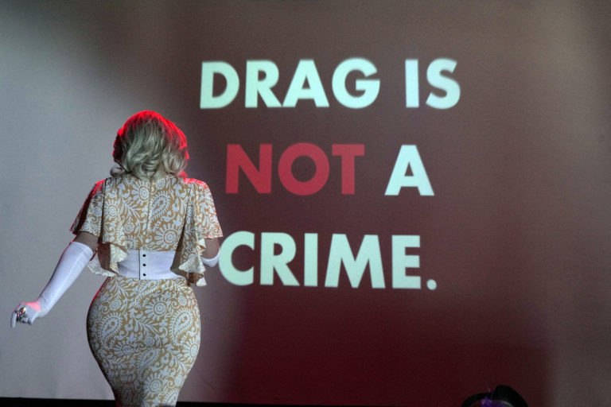

Federal Judge Strikes Down Texas Drag Show Law Again, Citing First Amendment Concerns
National | Politics
Published: Wednesday, August 26, 2026

A federal judge has once again ruled against a Texas law restricting drag performances, concluding that the statute violates the First Amendment and is written so broadly that it could potentially reach far beyond the performances lawmakers intended to regulate.
U.S. District Judge David Hittner issued the ruling Tuesday, Aug. 25, blocking Texas Attorney General Ken Paxton from enforcing Senate Bill 12. The decision represents the second time Hittner has determined that the law is unconstitutional.
The statute, signed by Gov. Greg Abbott in 2023, placed restrictions on so-called sexually oriented performances in public settings and at locations where minors could be present. Businesses found violating the law could face civil penalties of as much as $10,000, while performers could potentially face a Class A misdemeanor.
The legislation became the subject of a federal lawsuit after LGBTQ+ advocacy organizations, entertainment groups and a drag performer challenged its constitutionality.
Judge Says Law Is Too Broad
Hittner’s latest ruling focused heavily on the language used in Senate Bill 12.
The judge concluded that the statute was unconstitutionally vague and failed to provide ordinary people with sufficient notice about which performances could result in civil or criminal penalties.
A central issue was the law’s reference to performances that appeal to a “prurient interest in sex.”
Hittner questioned how that standard could be consistently applied, arguing that performances containing isolated elements that some viewers might consider sexual could potentially fall under the law.
The judge pointed to examples from mainstream entertainment, including performances associated with musicians and other entertainers, to illustrate the potential reach of the statute.
His ruling referenced Dolly Parton, whose death was announced Tuesday, as an example of a performer whose appearance or stage presentation could potentially become subject to scrutiny under an expansive interpretation of the law.
Hittner also cited Elvis Presley and Miley Cyrus when discussing how audiences and critics have historically reacted to performers whose acts contained sexual or provocative elements.
“There are ‘erotic’ elements in countless popular performances that could be subject to both civil and criminal penalties under S.B. 12,” Hittner wrote.
‘Just Don’t Go,’ Judge Says
The ruling also included a pointed message for Texans who object to drag performances.
Hittner wrote that people who find the types of activities described in the case offensive have a straightforward option: “just don’t go.”
The statement reflects the judge’s broader conclusion that the government cannot prohibit constitutionally protected expression simply because some members of the public find it objectionable.
Hittner further argued that the statute’s wording could potentially encompass activities far removed from traditional drag performances.
Among the examples he identified were cheerleading, dancing, live theater and other ordinary public performances.
The judge said the breadth of the statute raised serious First Amendment concerns because a reasonable person could have difficulty determining what conduct was actually prohibited.

The Law Has Already Been Through the Appeals Process
The legal battle over Senate Bill 12 has continued for several years.
Hittner originally ruled against the law in 2023, finding that it violated constitutional protections. Texas appealed that decision, and the 5th U.S. Circuit Court of Appeals later returned the case to Hittner for further consideration.
The appeals court’s decision came after the U.S. Supreme Court’s 2024 ruling in Moody v. NetChoice, which addressed how courts should analyze certain facial First Amendment challenges.
The appellate court instructed Hittner to reconsider the Texas case using the applicable constitutional framework.
After reviewing the case again, Hittner reached the same basic conclusion: the Texas statute could not constitutionally remain in force.
His latest order permanently bars Paxton from enforcing the challenged provisions and rejects the state’s request for a new trial and additional discovery.
Paxton Vows to Appeal
Paxton has rejected the ruling and said he plans to challenge it.
“This is a profoundly flawed decision that endangers our children and is an affront to Texas values,” Paxton said in a statement posted on social media.
He said he would appeal the decision and continue pursuing the state’s position regarding protections for children.
Paxton is also running for a U.S. Senate seat, adding a political dimension to the timing of the ruling, although the case itself concerns the constitutionality and enforcement of the state statute.
The governor’s office and Paxton’s office have faced criticism from both supporters and opponents of the law throughout the litigation.
Drag Performer Brigitte Bandit Celebrates Decision
Brigitte Bandit, a drag performer and one of the plaintiffs in the lawsuit, welcomed the decision.
Bandit’s performances include impersonations of Dolly Parton. Following news of Parton’s death, Bandit announced plans to perform as the country music legend at an Austin bar in her honor.
Bandit described drag performance as a form of free expression and said the ruling represented a victory for artists and members of the LGBTQ+ community.
Civil liberties advocates also praised the decision, arguing that Texans retain constitutional protections for expressive activity regardless of whether particular performances are controversial.
Texas Law Was Intended to Restrict Certain Performances Around Minors
Supporters of Senate Bill 12 argued that the law was necessary to prevent children from being exposed to sexually explicit or inappropriate performances.
The statute targeted performances described as sexually oriented and imposed restrictions when minors could be present.
Critics, however, argued that the law went too far and could be applied inconsistently because of its broad definitions.
That disagreement ultimately became a central question in the federal litigation.
Hittner’s ruling did not simply address whether particular drag performances were appropriate for children. Instead, the judge focused on whether Texas could create a law broad enough to criminalize or penalize expressive performances based on potentially subjective interpretations of sexual content.
Other States Are Facing Similar Legal Battles
Texas is not the only state to have attempted to restrict certain performances involving minors.
Florida has enacted its own restrictions concerning adult live performances, including provisions addressing sexually explicit conduct and performances that could be viewed as inappropriate for children.
The legal challenges surrounding these laws have produced different outcomes, underscoring the importance of the specific wording of each statute and the constitutional questions raised in individual cases.
The Texas ruling therefore does not automatically invalidate similar laws elsewhere.
What Happens Next
Tuesday’s decision does not necessarily end the dispute.
Paxton has indicated that Texas will appeal, meaning the case could return to the 5th U.S. Circuit Court of Appeals and potentially continue through additional stages of federal litigation.
For now, however, Hittner’s ruling prevents the Texas attorney general from enforcing Senate Bill 12.
The decision leaves Texas with another major legal setback in its effort to regulate drag performances and places the First Amendment at the center of an ongoing national debate over free expression, public performances and protections for minors.
The next stage of the case will likely determine whether Hittner’s ruling remains in place or whether an appellate court takes a different view of the law’s constitutionality.
More from DJWEIRDNASTY News:
National News •
Florida Officer Accused of Tracking Estranged Wife •
Judge Denies Karmelo Anthony’s Request for New Trial •
All News